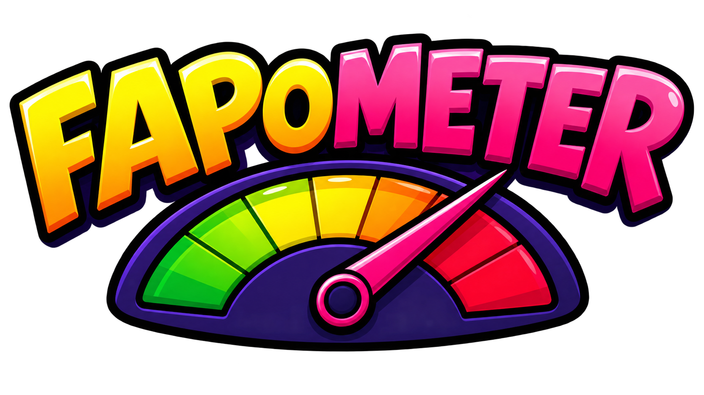

Última actualización: 25 de agosto de 2026Política de Privacidad
Esta política explica cómo Fapometer trata información cuando utilizas la aplicación. Fapometer es desarrollada y publicada por Corvin Develop.
1. Información general
Fapometer es un juego para Android que utiliza los sensores de movimiento del dispositivo para calcular una puntuación durante partidas de corta duración.
2. Datos tratados por la aplicación
Fapometer utiliza el acelerómetro del dispositivo únicamente mientras se juega para detectar movimiento y calcular la puntuación. Estos datos de movimiento no se envían a servidores de Corvin Develop ni se utilizan para identificar al usuario.
Las mejores puntuaciones se almacenan localmente en el dispositivo para mostrar el ranking de partidas. Corvin Develop no mantiene una cuenta de usuario ni un servidor propio para almacenar estas puntuaciones.
3. Publicidad de Google AdMob
Fapometer utiliza Google AdMob, un servicio de publicidad proporcionado por Google. Al mostrar anuncios, Google y sus socios pueden tratar determinada información del dispositivo y datos relacionados con la publicidad, de acuerdo con la configuración de consentimiento aplicable, la legislación vigente y las políticas de Google.
Esta información puede incluir identificadores publicitarios, información técnica del dispositivo, dirección IP aproximada, interacciones con anuncios y otros datos necesarios para entregar, medir, limitar y proteger la publicidad.
Puedes consultar las políticas de privacidad de Google para obtener información adicional sobre cómo Google trata datos en sus servicios.
4. Consentimiento y opciones de privacidad
Fapometer integra la plataforma Google User Messaging Platform (UMP) para solicitar o administrar el consentimiento cuando sea requerido por la normativa aplicable. La disponibilidad y contenido de estos mensajes puede variar según la región del usuario.
Cuando corresponda, el usuario podrá aceptar, rechazar o administrar determinadas opciones de privacidad desde los mensajes proporcionados por Google.
5. Servicios de terceros
Fapometer puede utilizar servicios de Google relacionados con publicidad, consentimiento, distribución y funcionamiento de la aplicación. Estos servicios se rigen por sus propias políticas y condiciones.
6. Menores de edad
Fapometer no está diseñada para recopilar intencionalmente información personal directamente de menores. La publicidad y el tratamiento de datos asociados estarán sujetos a la configuración de Google AdMob, la clasificación de audiencia definida para la aplicación y la legislación aplicable.
7. Seguridad y retención
Corvin Develop no opera servidores propios para almacenar información personal de los usuarios de Fapometer. Los datos locales, como las puntuaciones, permanecen en el dispositivo y pueden eliminarse al borrar los datos de la aplicación o desinstalarla.
8. Cambios a esta política
Esta política puede actualizarse cuando cambien las funciones de Fapometer, los servicios utilizados o los requisitos legales. La fecha de última actualización aparecerá al comienzo de esta página.
9. Contacto
Si tienes preguntas relacionadas con esta política o con la privacidad en Fapometer, puedes escribir a: